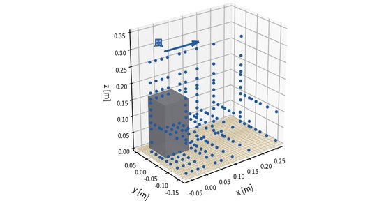
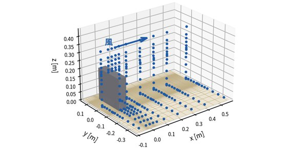
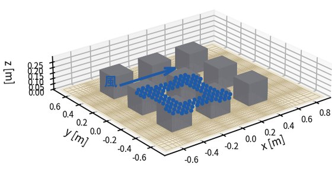
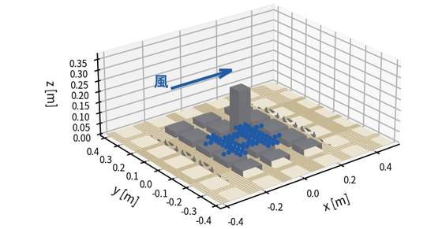
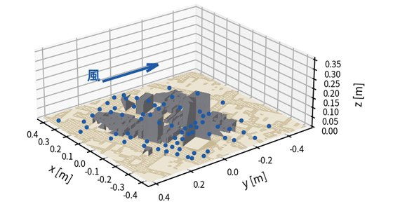
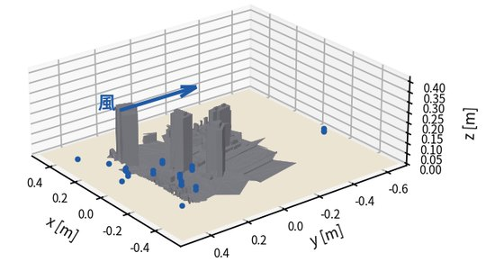
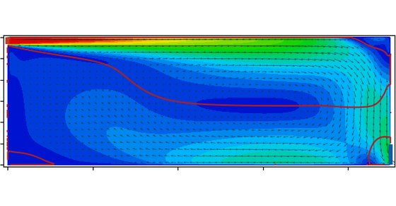
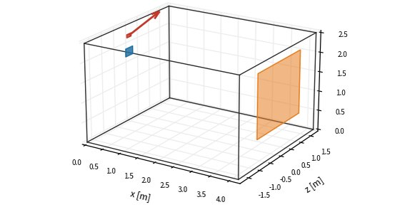
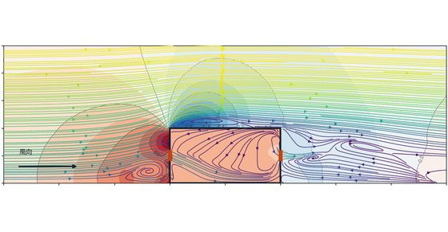

OpenFOAM · Validation & Verification
公表されている実験値に対して、計算が再現できることを確認した記録です。 反復収束・格子収束・離散化の影響を順に切り分けてから実験と比べ、 残った差がどこに由来するのかまで書いています。 合わなかった項目も、途中で撤回した結論も、そのまま残してあります。
これは途中経過の公開です。 現在、計算条件の全体について見直しを進めており、各報告書は精度を上げていく過程の記録です。 確定した検証結果ではありません。 引用されるときは、この段階のものであることを落とさないでください。 条件が定まった時点で、全体を作り直した版を出します。
市街地風環境
AIJ 市街地風環境ベンチマーク（CC BY 4.0） 6 件

ケース A — 1:1:2 単体角柱 RMSE 0.1351風速と乱流エネルギーを 186 点で照合。乱流モデル 8 種を同じ格子・同じ停止基準で解き、 収束したものと打ち切ったものを分けて載せています。 打ち切った 1 種は非定常計算で確かめ、後流が周期 0.24 秒で振れ続けることを示しました。
風洞実験 · Meng & Hibi (1998) ｜ 406,322 セル・格子 3 通り・Re 24,000

ケース B — 1:4:4 板状建物 RMSE 0.1350224 点で照合。ケース A と同じ 8 種・同じ手順で解き、形状比が変わったときに モデルの順位がどう動くかを見ています。
風洞実験 · Miyazaki & Tominaga (2003) ｜ 680,916 セル・格子 3 通り・Re 72,000

ケース C — 3×3 街区 ±25 % 以内 50 %中央棟の高さ 3 通り × 風向 3 通りの 9 条件を通しで照合。 歩行者高さ 1080 点、風速比の回帰は a = 1.08、R² = 0.79。
風洞実験 · Nonomura ほか (2003) ｜ 365,868〜614,084 セル・Kato–Launder 型 k-ε

ケース D — 街区・風向 3 種 ±25 % 以内 55 %同じ量どうしで照合できる風向 0° では RMSE 0.077、偏り −0.010。 全 198 点（独立な点 165）では RMSE 0.144。
風洞実験 · Tominaga ほか (2008) ｜ 1,174,409 セル・Kato–Launder 型 k-ε

ケース E — 新潟の実市街地 相関 0.71共通 77 点で RMSE 0.1997。相関は公表例の 0.76 に対し 0.71。 合っていない部分をそのまま載せています。
風洞実験 · 新潟工科大学 ｜ 1,481,929 セル・風向 N・縮尺 1:250

ケース F — 新宿副都心（1978 年） 13 地点同じ 13 地点を風洞実験と現地観測の 2 種類の測器で測っているケース。 測器が違えば値も違う、という前提から始まります。
風洞実験 ＋ 現地観測 ｜ 実市街地
室内気流・通風
3 件

IEA Annex 20 室内気流ベンチマーク GCI 1.08 %スロット吹出口のある室。格子 3 通りで内部の格子収束を 1.08 %、モデル誤差を 6.4 % と確定。 実験は三次元であり「2D」は呼称であることも含め、撤回した結論も収録しています。
公表 LDV 実測値 · Nielsen (1990) ｜ pimpleFoam・URANS 時間平均

IEA Annex 20 テストケース E — 混合対流 実測 3 機関夏期冷房の実大室。アルキメデス数を 32 倍振り、浮力生成項の有無まで比べています。 快適性指標と空気齢も対象。
実測 3 機関 · Lemaire (1993)、Blomqvist・Heikkinen・Fossdal ｜ 244,200 セル

通風ベンチマーク α = 0.65外部風と開口流れ。風下開口の流量係数は 0.65 ± 0.015。 通風量は実験比 −13.4 %、数値設定による差は 3.7 %。
風洞実験 · 空気調和・衛生工学会『CFD ガイドブック』4.5 節 ｜ 560,500 セル・風向 4 種
方法
1 件